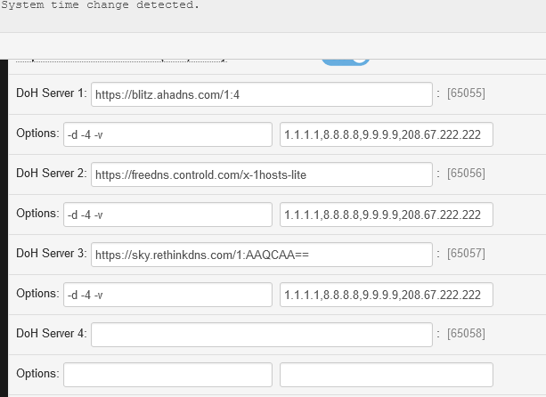
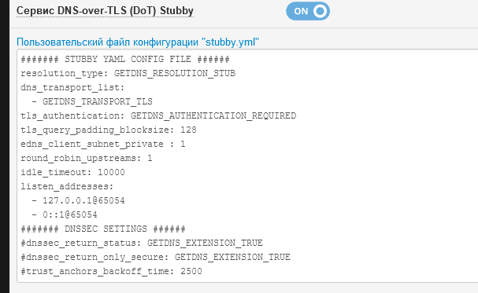
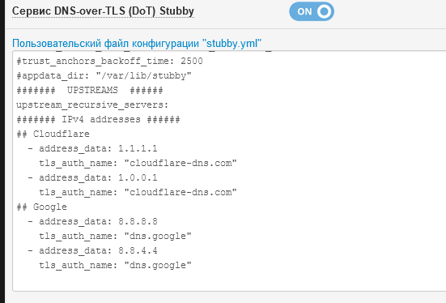

| Ник | Пост | Дата |
|---|---|---|
| LoaLoa | С сегодняшнего дня при попытке подключиться через Wi-Fi антизапрет пытается установить соединение, но не получается. | 2024-05-30T17:20:45.198Z |
| LeonMskRu(Leon MskRu) |
прописать более другой ДНС в системе ? | 2024-05-30T17:38:41.166Z |
| LoaLoa | Как это сделать? | 2024-05-30T17:59:02.067Z |
| dartraiden(Alexander Gavrilov) | Поскольку дом.ру уже был уличён в том, что перехватывает весь DNS-трафик по 53 порту, то вариантов два
либо
| 2024-05-30T19:38:55.513Z |
| LoaLoa | Проблема в том, что антизапрет у меня не подключается в принципе, поэтому проверять нечего. Автоматический DNS в настройках не помогает. | 2024-05-30T19:58:00.233Z |
| ValdikSS | С части провайдеров нет доступа до DNS ns[123].dnsowl.com | 2024-05-30T19:58:30.000Z |
| LoaLoa | Просто самое смешное то, что до сегодняшнего дня через вайфай Антизапрет работал исправно. Возможно, это можно как-то обойти? Вручную DNS поставить или что-нибудь ещё? И если да, то как? | 2024-05-30T20:48:01.739Z |
| ValdikSS | Достаточно сменить DNS-резолвер, выше написаны способы. 2024-05-31T15:54:00Z проблема ушла | 2024-05-30T23:13:14.021Z |
| Vitek9614(Виктор) | Доброго времени суток всем! У меня тоже провайдер DOM.ru, на роутере настроен antizapret, работает, но как-то нестабильно, иногда отваливается (нет подключения к VPN), перезагрузка роутера зачастую (опять же не всегда) проблему решает. Задумался о настройке DoT или DoH, в роутере такие настройки есть, но вот если просто что-то из них включить, не меняя настроек по умолчанию, то часть сайтов перестаёт открываться (в частности https://kinozaltv.life/). Возможно что-то нужно изменить, может подскажете, скрины действующих настроек VPN-клиента и дефолтных настроек DoT и DoH прилагаю.    | 2024-06-07T08:48:26.154Z |
| User69 | DoH, DoT, DNSCrypt, DNSSEC, DNS Rebind protection несовместимы с AZ | 2024-06-07T15:34:08.464Z |
{kind=link}